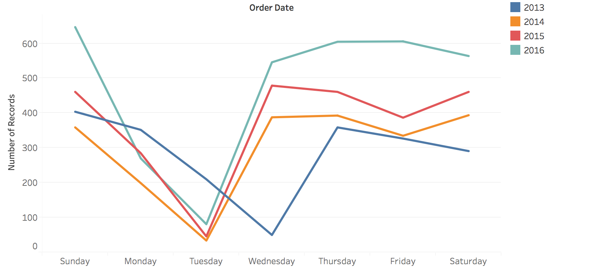
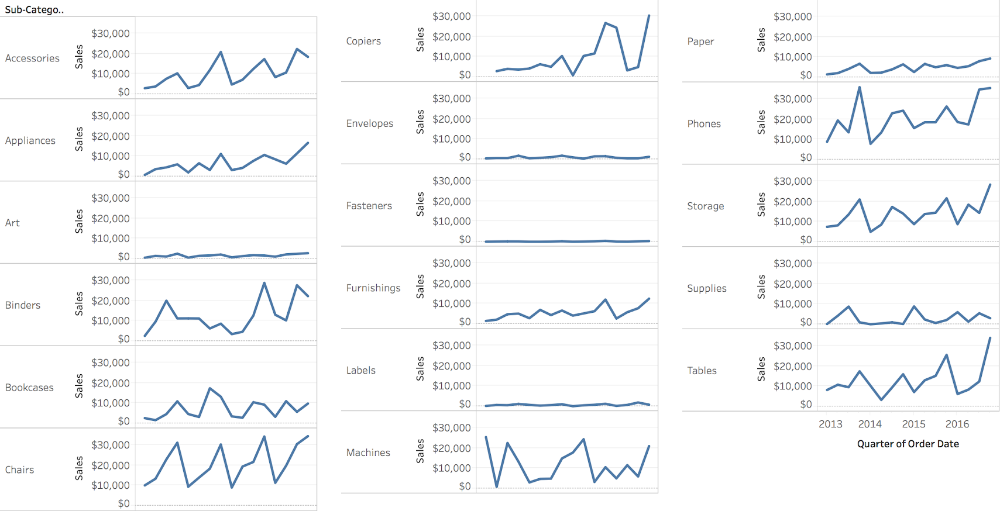
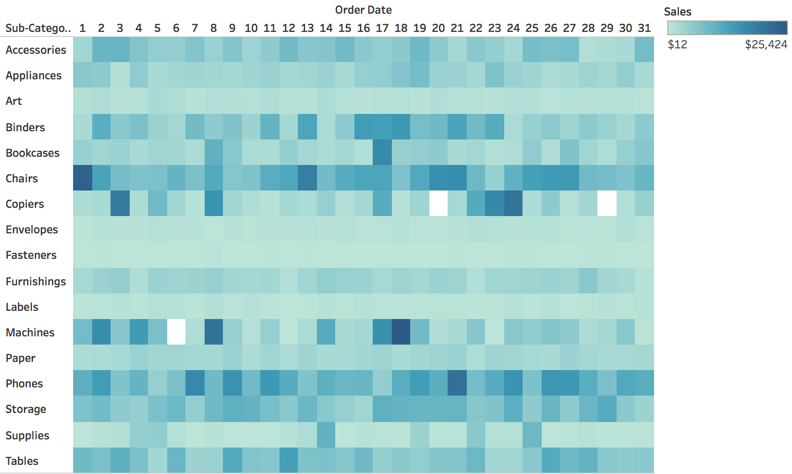
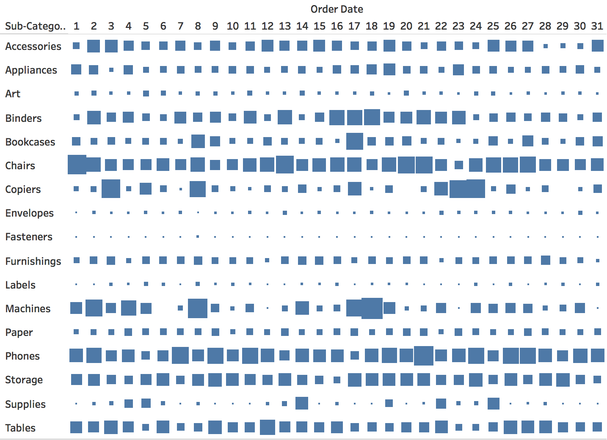
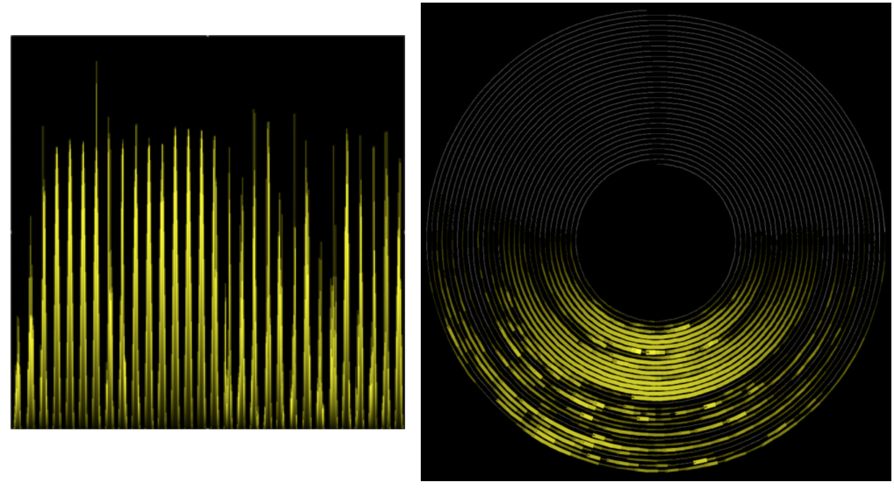
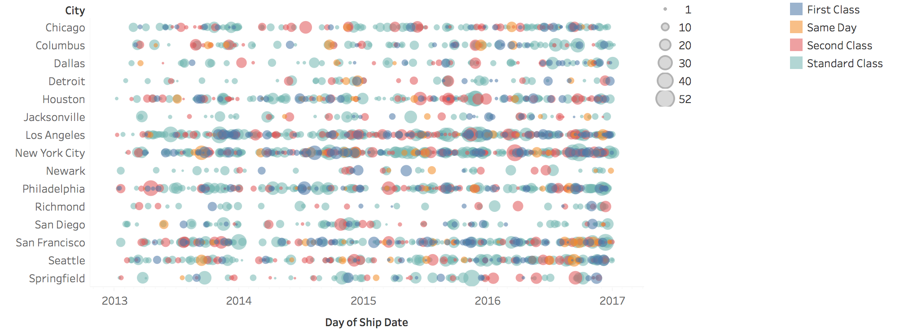

Today
Temporal data basics : events and measurements, time structures, aggregationCharts for time : line charts and aspect ratio, many series, heat maps, radial layouts, horizon charts, event data, interactionEvaluating a forecast : prediction intervals, time-ordered validation, residuals, horizonDrift and monitoring : when a deployed model goes stale, and how to see itAnomaly detection : showing anomalies in context, and the threshold trade-off
Parts 1 and 2 are based on materials by Enrico Bertini (NYU Tandon).
Purpose. Frame the lecture around a question students can use in their projects: what changes when the order of the observations carries information?
Opening. “Last week Pari showed how topology helps us understand the shape of data. Today we look at another kind of structure: time. A model can have a convincing test score and still fail next month. A chart can show a reassuring average and hide an afternoon of failures. We need both an appropriate evaluation and a view that makes those failures visible.”
Road map. Parts 1 and 2 establish the visual vocabulary. Parts 3 to 5 use that vocabulary to inspect forecasts and deployed models. Connect this to Week 3: the metrics still apply, but we must be explicit about which observations the test set represents and what information was available when each prediction was made. Credit Enrico Bertini for the temporal visualization material.
Pacing. Budget about 60 minutes for parts 1 and 2, 25 for forecasting, 20 for drift, and 15 for anomalies. There are 16 optional InfoVis examples marked SKIPPABLE, plus the two horizon-construction slides. Use those as the first cuts if discussion runs long. The later synthetic examples have known mechanisms so we can explain why a chart looks as it does.
Transition. “Before choosing a chart or a model, we need to know what a timestamp means in our data.”
Temporal Data Basics
Section bridge. “We will begin with the meaning of the records. Before drawing a temporal chart, decide whether each row is an event or a measurement, what its timestamp refers to, and which temporal structure matters for the question.”
Rationale. These decisions determine what information an aggregation preserves and what the later chart can legitimately show. Move directly to the incident table.
What is temporal data?
Data in which values depend on time, and time is explicitly recorded.
Purpose. Establish the unit of observation before introducing a time series. Students often start with a line chart without asking what one row represents.
Talk through the table. “Each row here records an incident in New York City. The date and time tell us when it occurred. Borough, street, and coordinates tell us where. Several incidents can share a timestamp, and the gaps between rows need not be equal.” Point to the records just after midnight on June 12, 2018. The temporal structure comes from those timestamps, not from the table’s current row order.
Emphasize. A timestamp makes temporal analysis possible. It does not by itself establish that the other attributes change systematically over time. Also distinguish event time from the time a system received or entered the record. A delay between the two can matter in monitoring.
Ask. “In a dataset you have used, what does one timestamp refer to: an event, a measurement, or a database update?” Take one example and identify its unit of observation. A ranking is ordered but has no temporal meaning unless time is recorded separately.
Transition. “Those answers usually lead to two different kinds of temporal data.”
Two kinds of temporal data
Event data
Time + object (with attributes)
“Something happened at time T”
A tweet, an email, an alarm, a model prediction request
Often irregular: events happen when they happen
Question: when, how often, in what order?
Measurement data
Time + measure(s)
“This was the value at time T”
Temperature, revenue, a stock price, daily model accuracy
Usually sampled at regular intervals
Question: how does the value change?
Counting events per interval turns event data into measurement data.
Purpose. Explain why some temporal displays use individual marks and others use a connected series.
Talk through. An email is an event: it happened at a particular moment and has attributes such as sender and recipient. A temperature reading is a measurement: it gives a value at a particular moment. Measurements can be irregular too, so regular sampling is common rather than part of the definition.
Use the incident table as a concrete transformation. “If I count incidents in each hour, I have created a measurement series from event records. The count depends on my choice of interval.” That transformation discards the order and spacing of events within each hour.
ML connection. Individual prediction requests are events. To produce a weekly accuracy series, join the requests to their eventual labels and compute correct predictions divided by labeled predictions in each week. Keep the denominator available: an accuracy based on ten cases carries different evidence from one based on ten thousand.
Check understanding. “Is a week with no recorded requests necessarily a week with zero requests?” No: missing logging and a true zero require different treatment.
Transition. “We also need to distinguish when something happened from how long it lasted and how precisely we recorded it.”
Describing time: position, interval, granularity
Position : when did it happen? A timestamp, absolute (Nov 17, 4:55 PM) or relative (three hours ago).Interval : for how long? A duration. Point events have none.Granularity : at what resolution was time recorded? Seconds, hours, days.
A meeting starts at 2:00 PM (position), lasts 90 minutes (interval), and is recorded to the minute (granularity).
For a deployed model, the gap between a prediction and its true label is an interval. It sets how soon accuracy can be measured.
SKIPPABLE - if running long, jump to ‘Three time structures’.
Purpose. Give students vocabulary for checking a time column before plotting it or using it as a feature.
Talk through. Use the meeting example to keep the terms separate. Two o’clock locates the meeting. The interval runs from 2:00 to 3:30, with a duration of 90 minutes. Recording only whole minutes limits the precision of its endpoints. An instantaneous event has a position, even when no duration is meaningful.
Why it matters. Hourly measurements cannot reveal the detailed shape of a ten-minute fluctuation. Aggregating second-level records into hours is possible, but recovering the lost timing from hourly totals is not. Distinguish the original recording precision from a coarser bin chosen for display.
ML example. “A prediction is made today, but its outcome may become known next month. That interval sets the earliest time at which we can score it.” A monitoring chart needs to account for that delay. Otherwise the latest dates can appear to have fewer successes simply because their outcomes are incomplete.
Transition. “Even with the same timestamps, there are several ways to organize time visually.”
Three time structures
Sequential : time as a line (Jan 1, …, Dec 31). Shows trends and change.Cyclic : time as a repeating cycle (Mon, Tue, …, Sun). Shows rhythms.Hierarchical : nested resolutions (year / month / week / day / hour). Allows drill-down.
Most real series have all three at once. You choose which one a chart emphasizes.
Purpose. Make chart selection follow the question. These are different views of the same timestamps, not three mutually exclusive kinds of dataset.
Talk through. For website traffic, a chronological line answers whether usage is growing. Grouping all Mondays together answers whether Monday behaves differently from Sunday. Moving from years to months to hours lets us inspect a broad change and then locate it more precisely.
Emphasize. A cyclic view deliberately discards some chronological information. Once all Mondays are pooled, we cannot tell whether the Monday pattern changed last year. A hierarchical view also needs calendar care: months have different lengths, and weeks can cross month boundaries.
ML connection. A linear model given only a time index can fit a linear trend. A weekday feature lets it represent a weekly rhythm. Later we will remove that feature and use the errors to recover the missing cycle. This gives the visual vocabulary a modeling consequence.
Ask. “For staffing next Tuesday, which view helps? For estimating annual growth, which view helps?” Expect cyclic for the first and sequential for the second, possibly combined when both effects matter.
Transition. “Here is what that choice does to a real set of order records.”
The same orders, two time structures
Sequential: sales by month, 2013 to 2016
Cyclic: number of orders by day of the week
Neither chart can show what the other shows.
Left answers: is the business growing, and when are the peaks?
Right answers: which day of the week is slow?
Same order records both times. Choosing the bin (month or weekday) is choosing the question.
Purpose. Demonstrate that aggregation determines which question a chart can answer.
Walk through. On the left, read the horizontal axis as successive months from 2013 to 2016 and the vertical axis as sales. Point to the larger later peaks. On the right, read the horizontal axis as weekday and the vertical axis as the number of order records pooled across the period. Tuesday is conspicuously low.
Important distinction. The two views change both the time grouping and the measure: sales dollars on the left, order counts on the right. We can compare the questions they support, but cannot attribute every visual difference to the time structure alone. A strict comparison of structure would keep the measure fixed.
Rationale. “The monthly view helps us discuss growth. The weekday view helps us discuss scheduling. Neither tells us whether the weekday rhythm stayed stable as the business grew.” Also avoid explaining the Tuesday dip as customer behavior without checking collection and processing practices.
Ask. “Could one unusually large purchase create a sales peak without creating a peak in order count?” Yes. This reinforces the need to name the measure.
Transition. “We can also keep the measure fixed and change only the temporal resolution.”
The same sales at two resolutions
Weekly bins (top) show individual spikes. Monthly bins (bottom) show the yearly shape and the growth.
SKIPPABLE - if running long, jump to ‘Aggregation is a design decision’.
Purpose. Show the information lost when we combine observations into larger bins.
Walk through. Both charts show sales over the same four years. The upper chart groups orders by week, and the lower chart groups them by month. Point to an isolated weekly peak, then find the corresponding period in the monthly view. Its contribution remains in the monthly total, but its timing within that month is lost.
Emphasize. These are sales totals. The spike has been combined with other sales in its month, rather than averaged away. The scales also differ: the weekly axis reaches roughly $40,000 and the monthly axis roughly $120,000. Taller monthly values do not imply a higher rate of sales, because the exposure period is longer.
Rationale. The monthly view makes the broad progression easier to follow. The weekly view better supports questions about short promotions or disruptions. If the question concerns intensity, compare sales per day or per open day, accounting for unequal interval lengths.
Transition. “A second way to expose structure is to align repeated cycles and compare them directly.”
A cycle nested in a sequence: one line per year
Orders by day of the week, one line per year

Sales by month, one line per year
Overlaying the years asks: is the cycle the same every year?
Left: Tuesday is the slow day in 2014, 2015 and 2016. In 2013 the slow day is Wednesday.
Right: every year is low in February and has peaks in September and near the end of the year
SKIPPABLE - if running long, jump to ‘Aggregation is a design decision’.
Purpose. Recover information that disappeared when all years were pooled into one cycle.
Walk through. The horizontal axis now repeats the same weekdays or months for every year. Color identifies the year. In the weekday chart, point to the Tuesday lows in 2014, 2015, and 2016, then to the Wednesday low in the blue 2013 line. The earlier pooled weekday chart concealed that disagreement. In the monthly chart, compare the recurring February low and the later-year peaks. The 2016 line generally sits higher.
Rationale. Alignment separates a change in overall level from a change in the timing or shape of a cycle. A higher line with a similar shape suggests one kind of modeling adjustment. A peak moving to a different weekday suggests another.
Caution. Treat the weekday discrepancy as a question to investigate. Check date handling, coverage, and aggregation before declaring behavioral drift. A chart can identify a discrepancy without establishing its cause.
Ask. “Would a model trained on the pooled weekday pattern capture the 2013 minimum?” This prepares students to look for systematic residuals later.
Transition. “These examples make the costs and benefits of aggregation concrete.”
Aggregation is a design decision
What aggregation buys
Less noise
Visible long-term trends
A manageable number of points
Daily to monthly averages makes a seasonal pattern readable.
What aggregation costs
Short events disappear
Extreme values are averaged away
The pattern can depend on the bin size
A one-hour outage is invisible in a monthly average.
Choose the granularity from the question: trends want coarse bins, anomalies want fine ones.
Purpose. Turn the preceding examples into a rule students can apply when building a visualization.
Talk through. “Start with the shortest event that would change a decision. If a one-hour outage matters, a monthly average cannot be the only view.” Coarser bins can reduce distracting variation and make broad patterns easier to see. They also remove within-bin timing and can dilute short failures.
Specify the operation. A sum answers how much activity occurred. A mean answers the average level. A maximum preserves a peak but says little about its duration. For accuracy, combine counts of correct and total predictions rather than averaging percentages from differently sized groups without weights.
ML example. A model may be correct on 95% of requests in a week while failing for most requests during a particular afternoon. The weekly average can be accurate and still be inadequate for diagnosis. A coarse overview linked to a finer detail view supports both questions.
Ask. “For a monitoring dashboard, what interval would you show first, and what failure would that choice hide?” There is no single correct bin size without a task.
Transition. “Once we have chosen what each value means, we can choose how to draw it.”
Charts for Time
Section bridge. “We have decided what one value means and how time is grouped. Now we choose the display. For each chart, ask which comparison it makes easy and what information becomes harder to recover.”
Rationale. Organize the section as a progression of problems: reading change, comparing several series, fitting many series, and examining individual events. This gives the examples a purpose beyond learning chart names.
Line charts: time on x, value on y
Position encodes both time and value; the line’s slope encodes the rate of change.
Purpose. Explain why a line chart is a useful default for measurements and what assumptions its connecting segments introduce.
Walk through. The figure shows quarterly sales. Read one point as sales for a quarter, then trace successive rises and falls. Position supports comparisons of values, while the connected path makes changes and repeated peaks easy to follow.
Emphasize. The segment between two quarterly totals is a visual connection. It does not tell us that sales evolved linearly within the quarter. Missing periods should not silently become zero, and a long connecting line across a gap can suggest more continuity than the data supports.
Rationale. On linear axes, the numerical rate of change is change in value divided by elapsed time. The angle we see also depends on the displayed axis scales and the plot’s dimensions. Students should distinguish the numerical rate from its visual steepness.
Ask. “If I stretch this chart vertically, did the business start growing faster?” The answer leads directly to the next comparison.
The same data at three aspect ratios
The aspect ratio (width / height) changes how steep every change looks.
Purpose. Make students notice a design choice that plotting software usually makes for them.
Walk through. Ask everyone to find the August-to-September drop in all three panels. The dates and values agree. In the tall, narrow panel it looks almost vertical. In the wide panel it occupies a gentler angle. Then compare the recovery after the trough to make clear that every segment changes appearance.
Rationale. Screen slope depends on vertical pixels per unit divided by horizontal pixels per unit. Changing width or height changes that ratio even when axis limits and data stay fixed. This is why perceived urgency or volatility can change with the shape of the plot.
Emphasize. A wide chart is not automatically more honest. A very flat chart can make important changes hard to distinguish. Choose dimensions that support the intended comparison and keep scales consistent when comparing panels.
Transition. “There is a classic perceptual guideline for choosing dimensions when the task is to compare slopes.”
Banking to 45°
We compare the slopes of line segments most accurately when they are near 45°
Banking to 45° : choose the aspect ratio so the typical segment has a 45° slopeRight: Canadian lynx trappings, 1821 to 1934
Wide and flat (bottom): each cycle rises slowly and falls quickly , which the tall version hides
Purpose. Explain the reasoning behind banking, rather than asking students to memorize 45 degrees as a universal rule.
Walk through. Both charts show the same annual lynx trapping series on a logarithmic vertical scale. First identify the repeated peaks in the tall plot. Then use the lower plot to compare the rising and falling sides of a cycle. The rises tend to extend over more years than the sharp declines. Nearly vertical segments in the tall chart make that asymmetry harder to judge.
Explain. Banking changes the aspect ratio so a representative absolute segment slope is near 45 degrees. Segments that all look nearly horizontal or nearly vertical offer little visible angular separation. The guideline gives their differences more room to be seen.
Qualification. It is a guideline for slope comparisons, not a requirement that every segment be at 45 degrees or a guarantee of the best layout for every task. The logarithmic scale also means we are comparing proportional changes in trapping counts. Trappings are the measured quantity, so avoid presenting the figure as a direct census of the animal population.
Transition. “So far we have drawn one series. What changes when several series share the same chart?”
Several series: color by category
Three categories on shared axes are easy to compare.
Purpose. Establish what an overlay does well before showing where it breaks down.
Walk through. Identify Consumer, Corporate, and Home Office in the legend, then follow one line across time. Consumer is highest in most quarters. Because all three use the same axes, we can compare their levels at a date and see whether peaks occur together.
Rationale. With a small number of distinguishable lines, shared position makes comparisons economical. Color identifies a category while vertical position carries the quantity. Direct labels near the lines can reduce repeated trips to the legend.
Emphasize. Similar timing suggests a common pattern worth investigating, but does not establish that one category causes another to move. Also keep the units and aggregation interval consistent across the series.
Ask. “Can you follow the orange line without losing it at a crossing? What if we added fourteen more categories?”
Transition. “The next chart makes exactly that addition.”
The spaghetti plot
Seventeen categories on shared axes: color runs out and lines hide each other.
Purpose. Let the audience experience why adding more categories can reduce useful information, even when every value remains on the screen.
Activity. Give students a few seconds to find one mid-range category and follow it through several crossings. Then ask what they can still judge confidently. The overall range and a few dominant peaks remain visible. Following an individual series through the center is much harder.
Explain. Seventeen product subcategories compete for the same position and color channels. Crossings interrupt visual tracing, similar colors become hard to distinguish, and the legend requires repeated searching. The failure depends on the task: an overview of the envelope may still be useful, while a comparison of two named categories becomes difficult.
ML connection. This is what can happen when a monitoring dashboard overlays every class, region, or device type on one metric chart. An important failure in a small group can become visually inaccessible.
Transition. “We can reduce what is visible, emphasize a selection, or give the series separate space. Each choice has a cost.”
Two fixes: filter, or highlight
Filter: show only the series you care about
Highlight: keep the rest as faded context
Filtering removes the context: are these three series typical?Highlighting keeps the context, at the cost of some clutterA third fix is small multiples : one small chart per series on shared axes. Nothing is hidden, but two series are harder to overlay.
Purpose. Explain the trade-off between focusing attention and preserving context.
Walk through. On the left, trace Chairs, Phones, and Tables. Filtering removes the other series, so the selected lines are easy to read. On the right, trace the same lines again, then inspect the faded background. Highlighting lets us see how the selection sits within the rest of the data.
Rationale. Filtering suits a question about a known subset. Highlighting helps when we also need to know whether that subset is typical. A filtered chart should make its selection clear so the reader does not mistake three selected categories for the whole dataset.
ML example. Select a failing region while retaining the other regions as faint context. If every region dips at the same time, a shared pipeline problem becomes a plausible hypothesis. If only the selected region dips, a local explanation becomes more plausible. Neither picture alone proves the cause.
Transition. “If every series deserves attention, small multiples allocate a separate panel to each one.”
Small multiples: one panel per series

The seventeen series from the spaghetti plot, each in its own panel on the same axes. Nothing is hidden.
SKIPPABLE - if running long, jump to ‘Stacked areas are hard to read’.
Purpose. Show how spatial separation removes occlusion, and why scale choices remain part of the design.
Walk through. Locate the seventeen product subcategories from the spaghetti plot. Each panel uses the same time range and a common vertical scale. Chairs and Phones show large fluctuations. Art, Envelopes, Fasteners, and Labels appear close to the bottom because their magnitudes are small relative to that common range.
Emphasize. “Nearly flat on this scale does not mean unchanging.” Separate vertical scales could expose the smaller series’ shapes, but would make the same screen height represent different amounts in different panels. Choose common scales for magnitude comparison and clearly labeled separate scales when shape is the primary question.
Rationale. Occlusion disappears, but readers must move their eyes between panels to compare two series. A stable ordering, aligned dates, and consistent scales reduce that effort. Highlighting the same time range across panels can help further.
ML connection. Per-class recall or regional accuracy often benefits from this layout because a small group receives its own visible space.
Transition. “Another common way to combine categories is to stack them, which changes the comparison task.”
Stacked areas are hard to read
The same four regions stacked
Only the bottom layer and the total have a flat baseline. Every other layer rides on the ones below it.
Left: comparing any two regions takes a glance, but the total is not drawn
Right: the total is the top edge, but try to say whether South (red) rose or fell in a given quarter
Stack when the total and the bottom layer are what matter
Purpose. Explain why the apparent movement of a stacked boundary can differ from the movement of the category it represents.
Walk through. Start with South, the red line on the left. Choose two adjacent quarters and compare their sales. Then ask the same question for the red layer on the right. Its value is the vertical thickness of the layer, the difference between its upper and lower boundaries. Both boundaries move as the categories beneath it change.
Rationale. The bottom layer has a fixed zero baseline, and the top boundary gives the total. Interior layers require comparing differences between moving positions, which is harder than comparing positions on a shared baseline. The layer order changes which category is easiest to inspect.
Emphasize. Stacking works for additive components of a meaningful total. Counts of requests by mutually exclusive category can be added. Accuracies or error rates for different groups generally cannot be stacked to produce overall accuracy.
Ask. “If the top edge of South rises, must South’s own sales have risen?” No: an underlying region may have increased.
Transition. “Normalizing the stack changes the question again, from amounts to shares.”
Normalized stacked areas: shares instead of totals
Every quarter sums to 100%, so the chart shows composition. Whether total sales grew or fell is no longer visible.
SKIPPABLE - if running long, jump to ‘Heat maps: time on one axis, categories on the other’.
Purpose. Explain what a 100% stack preserves and what normalization removes.
Walk through. Every quarter fills the same height. Read the thickness of South’s red band as its share of that quarter’s total. It occupies roughly 60% in the first quarter of 2013 and much less in the next quarter. West has a fixed edge at 0%, and Central has a fixed edge at 100%. The middle layers still have moving baselines.
Rationale. Dividing each region’s sales by the total isolates composition. If all regions doubled their sales together, this chart would look unchanged. Conversely, one region’s share could fall while its sales increased, if the others grew faster.
ML connection. A changing mix of incoming classes or customer segments can affect an aggregate metric. Show volume alongside proportions when the operational question depends on both. A shift in the mix is a reason to inspect performance, not proof of performance loss.
Transition. “For more categories, a matrix can give each category its own row while keeping a compact overview.”
Heat maps: time on one axis, categories on the other
Color replaces height, so many series fit in the space of one line chart.

Purpose. Explain the exchange of precise position judgments for a compact view of many series.
Walk through. Rows are product subcategories. Columns are days of the month, 1 through 31. Darker color indicates larger sales. Trace Chairs and Phones across the row, then compare their sustained darker values with the isolated dark cells for Machines or Copiers.
Important context. The columns are day-of-month groups, not a continuous sequence of dated observations. A column labeled 15 pools records for the fifteenth. It does not identify one particular month, and the 31st occurs in fewer months than the 15th. This matters if we want to compare activity rates rather than totals.
Rationale. Fixed cell positions prevent lines from hiding each other. Color reveals broad patterns but makes exact differences harder to judge. A legend and access to values are useful when a particular cell matters.
ML connection. A features-by-week matrix can show which features changed together. Keep the meaning of the color scale clear, especially when features have different units or require normalization.
Transition. “We can keep the matrix and change only the visual channel used for magnitude.”
The same matrix with size instead of color

Same rows and columns as the heat map; the area of each square encodes sales. Small values almost disappear, and large squares touch.
SKIPPABLE - if running long, jump to ‘Measles in the United States, by state and year’.
Purpose. Isolate the effect of the encoding channel while preserving the row-and-column layout.
Walk through. The rows and day-of-month columns match the previous slide. Now square area carries sales. Locate Chairs and Phones, which remain prominent. Then find the tiny marks for Fasteners or Labels and the large adjacent marks in the Copiers row.
Rationale. A color heat map gives every cell the same footprint. With size, small values become difficult to inspect and large values can touch their neighbors. This can serve a task focused on locating large values, but it offers less support for differences among small values.
Emphasize. If constructing this chart, map the quantity to area. Mapping it directly to square side length would make the displayed area grow quadratically. Also distinguish a missing observation from a true zero, which may have no visible square.
Ask. “Which view would you use to find consistently low-activity categories? Which would draw attention to the largest cells?” Ask for the task behind the choice.
Transition. “The next heat map shows why aligned rows are particularly useful for seeing a change shared by many series.”
Measles in the United States, by state and year
Purpose. Show how a common time axis and an event annotation help readers recognize a broad temporal change.
Walk through. Each row is a state and each column a year. The original WSJ graphic reports cases per 100,000 people, so the color encodes a population-normalized rate. Point to the vertical marker for the vaccine’s introduction in 1963, then compare the many colored cells before it with the much paler region afterward.
Rationale. A separate chart for every state would make this synchronized change harder to scan. Here, the transition forms a visible boundary across the rows. The annotation gives that boundary historical context.
Emphasize. The visual comparison shows timing and association. A before-and-after chart alone does not estimate a causal effect or account for every reporting difference. We can explain the design without treating the image as a complete causal analysis.
ML connection. Mark a model deployment or data-pipeline change on aligned monitoring plots. That gives a viewer a concrete event to investigate when several metrics move together.
Source detail. The rate denominator is specified in the original WSJ graphic .
Measles today: new U.S. cases by week, 2025-2026
SKIPPABLE - if running long, jump to ‘Careers as rows: goal-scoring rate by age’.
Purpose. Bring the original heat map’s story up to the present, and contrast a single national series with the state-by-year heat map.
Walk through. Each bar is one week of confirmed U.S. cases, from late 2024 to mid-November 2026. Point to the three annotations: the West Texas outbreak declared in early 2025, the surge in South Carolina around January 2026 (the tallest week, near 300 cases), and the large outbreaks in Pennsylvania, Wisconsin and New York from late summer 2026 onward.
Contrast with the heat maps. The previous slide compares annual rates across states. This chart shows when recent outbreaks occurred by plotting weekly national counts. Its annotations identify the states associated with major peaks. The next slide puts those outbreaks back on the state-by-year scale.
Emphasize. The last bar is much lower than the weeks before it. Ask whether that is a real drop or a week whose cases have not all been confirmed and reported yet. This is the same label-delay problem from the start of the lecture: the most recent points of a monitoring chart are often incomplete.
ML connection. Annotating outbreaks here plays the same role as marking a deployment or pipeline change on a monitoring plot: it gives the viewer a named event to check a spike against.
Transition. “Where do those recent outbreaks show up on the longer state-by-year chart?”
Measles in the United States, 1928–2026
Purpose. Put the recent outbreaks on the same state-by-year scale as the original historical chart.
Walk through. Each row is a state or D.C., and each column is a year. Purple intensity encodes reported cases per 100,000 people on a symmetric logarithmic scale. Gray cells mark missing values. Point to the vertical marker for the vaccine’s introduction in 1963, then compare the many darker cells before it with the much paler region afterward. The scale makes low recent rates easier to distinguish while still showing the historical range.
Rationale. A separate chart for every state would make this synchronized change harder to scan. Here, the transition forms a visible boundary across the rows. The annotation gives that boundary historical context.
Emphasize. The visual comparison shows timing and association. A before-and-after chart alone does not estimate a causal effect or account for every reporting difference. We can explain the design without treating the image as a complete causal analysis.
ML connection. Mark a model deployment or data-pipeline change on aligned monitoring plots. That gives a viewer a concrete event to investigate when several metrics move together.
Source detail. The 2023 column is missing because the sources used here lack comparable state-year totals for that year. The recent CDC counts are for U.S. residents assigned to a reporting jurisdiction. New York City is combined with New York State. The 2026 column uses provisional counts through November 12, divided by 2025 Census population estimates.
Transition. “Rows do not have to share a calendar. The next chart aligns them by age.”
Careers as rows: goal-scoring rate by age
One row per player, aligned by age , not by calendar year
Color : non-penalty goals per 90 minutesSize : share of the available minutes the player was on the fieldRows are sorted by career scoring rate
The time axis is relative: every career starts at the left, so careers can be compared
SKIPPABLE - if running long, jump to ‘Calendar heat maps’.
Purpose. Introduce alignment by a meaningful relative clock when calendar dates would obscure the comparison.
Walk through. Each row is a player and each mark represents a season positioned at the player’s age. Color encodes non-penalty goals per 90 minutes. Size encodes the share of available playing minutes. Compare a small dark square with a large dark square: both show a high scoring rate, but the smaller square represents less playing time.
Clarify the alignment. The shared clock is age, not time since each player’s first season. Players can therefore have different ages at their first visible mark. The chart aligns comparable stages of life while giving up the calendar context in which those seasons occurred.
Rationale. Rate and exposure answer different questions. Small exposure can make a rate less stable, although mark size is not a formal uncertainty interval. Sorting by career scoring rate helps organize the rows but does not explain why players differ.
ML connection. Align models by time since deployment to compare how performance evolves after launch. Use calendar dates instead when a common external event is the question.
Transition. “Calendar layouts retain another useful alignment: familiar days and weeks.”
Calendar heat maps
A heat map laid out by the calendar: rows are weekdays, columns are weeks
Weekly rhythm reads down a column, seasonal rhythm across a row
Here: daily bike-share rides, 2014 to mid-2017
Summers are bright, winters dark, every year
Purpose. Explain how calendar geometry lets the reader compare weekly rhythm and seasonal progression in the same view.
Walk through. Each block is a year of daily Divvy rides. Rows run from Monday to Sunday, and columns advance through the weeks. Read down one column to compare days within a week, then across a row to follow that weekday through the year. The brighter summer region appears in each complete year, with many bright weekend cells.
Rationale. The layout uses the reader’s familiarity with the calendar and aligns comparable weekdays. A single long line chart preserves chronology more directly, but makes it harder to compare corresponding days across many weeks.
Emphasize. The 2017 block ends in June because the records stop there. Blank future cells do not mean zero rides. Missing observations, zero values, and dates outside the dataset should have distinguishable appearances.
Ask. “Would this be a good view for reading the exact difference between two dates?” It is stronger for locating patterns than for precise value comparison.
Transition. “We can use the same alignment idea for hours within a day.”
Hour of day by month: the daily cycle over the years
Columns : hour of the day, 0 to 23Rows : months, January 2015 (bottom) to April 2017 (top)Color : number of recorded events in that hour, summed over the monthQuiet from 1 to 5 AM and a peak at 4 to 5 PM, in every month
The pale top row is the last month in the data. Check that it is complete before reading it as a drop.
SKIPPABLE - if running long, jump to ‘Horizon charts: many series in little space’.
Purpose. Show how to inspect whether a daily rhythm persists, and how incomplete bins can mimic a change.
Walk through. Columns are hours from 0 to 23. Rows are months, with January 2015 at the bottom and April 2017 at the top. Each cell counts records in that hour across the month. Follow the dark afternoon columns vertically. Their persistence indicates a similar daily rhythm over many months. The early morning hours remain quieter.
Rationale. Repeated vertical bands make a stable daily pattern easier to recognize than a long sequence of hourly peaks. Comparing rows can reveal changes in the shape or timing of that pattern.
Caution. The pale top row could reflect a partial final month. The image alone does not establish that explanation, so check the date coverage before announcing a collapse. Counts also depend on month length. For intensity comparisons, consider events per observed day and account for missing hours.
Color connection. These are nonnegative counts with no meaningful midpoint. A sequential color scale is easier to justify than a diverging scale that suggests values on opposite sides of a reference.
Transition. “Another way to align repeated phases is to wrap time around a circle.”
Spirals: the cycle on the angle, time on the radius

Left: a periodic series on a straight time axis. Right: a spiral with one period per turn, so the peaks line up in one sector.
SKIPPABLE - if running long, jump to ‘Horizon charts: many series in little space’.
Purpose. Explain the encoding before evaluating whether a spiral helps the task.
Walk through. On the left, time advances along a straight axis. On the right, it advances along a spiral. One complete turn represents a chosen period, so angle identifies phase within that period and successive turns represent successive cycles. Brightness carries the measured value. Point to the bright sector that repeats across turns.
Rationale. When the chosen period matches the data, peaks at the same phase align visually. The display combines repetition with chronological progression in a compact space.
Emphasize. The turn length is an analytical choice. If it is wrong, the peaks shift around the spiral from one turn to the next. That shift could reflect a mismatched period or a changing process. It needs investigation, rather than an immediate interpretation as noise.
Ask. “If the phenomenon repeats every seven days, what should one turn represent? What would happen if we chose six?” The peaks would gradually move around the circle.
Transition. “The climate spiral uses a related visual form, but assigns a different meaning to radius.”
The climate spiral
Angle : month of the yearRadius : global temperature change; the red rings mark 1.5 °C and 2.0 °COne loop per year , 1850 to 2016, colored from purple (early) to yellow (recent)What it shows well: the loops move outward, and the recent ones are the outermost
What it shows poorly: the value in any particular year
SKIPPABLE - if running long, jump to ‘Horizon charts: many series in little space’.
Purpose. Distinguish a graphic designed to communicate a broad change from one designed for detailed comparison.
Walk through. In this historical frame, angle identifies the month and color identifies the year. Radius represents the global temperature anomaly. Unlike the previous spiral, moving outward here means a larger measured value, rather than simply a later turn along the time axis. Trace a recent yellow loop and compare it with the earlier purple loops.
Context. Hawkins’s original animation uses HadCRUT4 monthly values relative to the 1850–1900 mean. The red reference rings give the radial distance a temperature scale. Keep the discussion tied to the historical data shown, which end in 2016. A monthly value near a ring is a monthly comparison, not a statement about a sustained multi-year average.
Rationale. The outward movement of recent loops communicates warming clearly. Recovering an individual older year or comparing two exact values is harder because many paths overlap. An annual line chart would support those tasks more directly.
Ask. “What do you learn in two seconds? What question would require a different view?”
Source. Hawkins’s explanation of the original spiral .
Radial or linear: the same events both ways
Which country’s unrest lasted longest? Which ended first? Try each chart.
We read lengths on a common straight axis faster and more accurately than angles and arcs
On the left, the same number of months is a longer arc on an outer ring than on an inner one
Use a radial layout when the cycle itself is the message
SKIPPABLE - if running long, jump to ‘Horizon charts: many series in little space’.
Purpose. Evaluate a visual layout with a concrete reading task.
Activity. Ask students to compare the duration and endpoints of two countries in the radial chart, then repeat in the linear chart. In the linear version, endpoints share a horizontal month axis. In the radial version, readers must map angles back to months and follow separate rings.
Explain. At radius r, an angular span has arc length r times the angle. Equal durations can therefore occupy different physical lengths on different rings. The encoding can be decoded through angle, but its visible arc lengths can mislead a quick comparison.
Read the endpoint marks carefully. Symbols indicate reported outcomes. A bar reaching the graphic’s time boundary does not necessarily mean the unrest ended there. Restrict claims to the period and endpoint information shown. Color encodes reported victims, which is a separate variable from duration.
Rationale. These events unfold over a year without forming a repeating cycle. The straight axis supports the stated duration questions. A radial layout is easier to motivate when joining the end of a cycle to its beginning helps the reader.
Transition. “Space constraints can justify less familiar encodings. Horizon charts provide a different example.”
Horizon charts: many series in little space
Line charts squeezed into thin rows
The same rows as horizon charts
Same data, same space. The next two slides show how the right-hand version is built.
Left: about fifty line charts, each a few pixels tall. They all look flat.
Right: blue is above the baseline, red below, and darker is further from it
Purpose. Motivate a more complex encoding by showing the problem it addresses.
Walk through. Each row is a stock series. On the left, squeezing line charts into thin rows makes vertical variation difficult to see. On the right, hue indicates the sign of deviation from a baseline and darker bands indicate larger deviations. Ask students to find a time when several rows turn red together.
Rationale. Horizon charts exchange some position reading for color and layering to preserve useful patterns at small heights. They can help locate coordinated changes across many rows, but require learning the legend and the band construction.
Emphasize. Red and blue describe a relationship to a specified baseline. They do not automatically mean bad and good. The baseline and band widths must be stated, and comparable rows need compatible scales if magnitude comparisons matter. The study by Heer and colleagues examines the trade-off between compactness and reading accuracy, rather than establishing that more compression is always better.
Transition. “The next two slides unpack the transformation. Later, forecast horizon will mean how far ahead we predict, which is a different use of the word.”
Building a horizon chart (1): cut into bands
Fill the area between the line and the baseline, then slice it into bands of equal height. Darker means further from the baseline.
SKIPPABLE - if running long, jump to ‘Sparklines’.
Purpose. Make the compact encoding readable by building it from an ordinary signed series.
Walk through. Start with the line and horizontal baseline in the upper image. Fill the area above the baseline blue and below it red. Divide positive and negative deviations into equally sized magnitude bands, using darker shades for bands further from zero. At this stage the geometry retains its full height.
Use a simple example. “Suppose one band is ten units high. A value of +25 fills the first two positive bands and five units of the third. A value of −25 fills the corresponding negative bands.” Sign selects the hue, and magnitude determines which bands are present.
Rationale. We are assigning color to information that will no longer be recoverable from full vertical displacement after compression. The reader needs to understand the band scale before looking at the final compact row.
Transition. “Now we can fold and layer the bands while retaining clues to their original values.”
Building a horizon chart (2): mirror and collapse
Mirror the negative values above the baseline, then slide every band down to the baseline. Height becomes color intensity.
SKIPPABLE - if running long, jump to ‘Sparklines’.
Purpose. Explain how the final height reduction preserves sign and approximate magnitude.
Walk through. In the upper image, the negative region has been reflected above the baseline. It remains red, so reflection does not change the meaning of the values. In the lower image, bands have been shifted down onto a shared baseline and layered. The entire row is now only one band high.
Return to the example. With ten-unit bands, +25 belongs to the third positive band and extends five units into it. Its blue shade identifies the band and its remaining height carries the within-band amount. For −25 the corresponding mark is red. Hue, shade, and height work together.
Emphasize. Compression has a reading cost. A dark region means a larger absolute deviation, but exact values require the band scale and some decoding. More layers increase density while making that task harder.
Transition. “Sparklines make a different compromise: they retain a familiar line and usually give up explicit axes.”
Sparklines
“Small, intense, word-sized graphics with typographic resolution.” (Edward Tufte, Beautiful Evidence , 2006)
No axes and no labels: a sparkline sits beside a number and shows where it came from.
Purpose. Explain how a tiny historical trace adds context to a summary number.
Walk through. The image is a 28-day Twitter analytics summary. Choose one metric, read the large number, then point to its small line below. The number summarizes the period. The line shows whether activity was steady, concentrated in a spike, or changed toward the end. Two periods can have the same total and very different histories.
Rationale. A sparkline is useful when the reader needs a quick temporal pattern beside a value. Omitting axes saves space, while the surrounding labels supply meaning. It provides less support for reading exact values or estimating a numerical slope.
Emphasize. Check whether different sparklines share a scale. If each has its own range, equally tall spikes do not imply equal magnitudes. A monitoring sparkline also needs a known time window and a way to inspect detail when something looks unusual.
Transition. “So far our compact views have mostly shown measurements. Event records need marks that preserve individual occurrences.”
Event data: one mark per event

Position is the date, row is the city, size is the quantity shipped, color is the shipping mode. No line connects the marks, because nothing is measured between events.
SKIPPABLE - if running long, jump to ‘Evaluating a Forecast’.
Purpose. Return to the event/measurement distinction and show what individual-event marks preserve.
Walk through. Position locates a shipment date, the row identifies a city, size represents quantity shipped, and color identifies shipping mode. Look first for dense rows and long gaps, then for unusually large marks. There is no measured value to interpolate between two separate shipments, so connecting all the marks with a line would suggest the wrong structure.
Rationale. This display preserves event timing and attributes that a line of daily totals would combine. Dense rows also reveal its limitation: overlapping marks make individual events and colors hard to distinguish. Transparency or interactive inspection can help, while binning trades detail for a readable count series.
Caution. If jitter is used to separate overlaps, keep the actual timestamp recoverable and explain any displacement. A logging gap can also look like an absence of events.
ML connection. Prediction requests, alerts, and deployments are event records. Deployment marks are especially useful as annotations alongside continuous performance metrics.
Transition. “For an event that lasts, show both endpoints.”
Events with duration: one bar per interval
A bar runs from start to end on a shared time axis (a Gantt chart). It shows overlaps, gaps, and what ran at the same time.Left: tenures of evening news anchors since 1948. Right: tape mounts on 24 drives over about two and a half days.
SKIPPABLE - if running long, jump to ‘Evaluating a Forecast’.
Purpose. Explain why interval bars support questions about duration, overlap, and resource occupancy.
Walk through. On the left, the horizontal endpoints locate news-anchor tenures, grouped by network. Point to a succession of tenures and then an overlap. On the right, each row is a tape drive and each bar is a mount. Its endpoints locate the start and finish, while color distinguishes the requesting system. Compare a long occupancy with a burst of short mounts.
Rationale. A common horizontal axis makes duration a length comparison. Vertical alignment reveals simultaneous activity across resources. An event count alone would discard the difference between one long job and many short jobs.
Emphasize. Name what each row represents. A row per person, resource, or task supports a different comparison. If an interval is ongoing at the end of the data, mark that status rather than implying a known finish time.
ML connection. The same design can show training jobs on GPUs or pipeline stages within runs. Overlaps and idle periods become visible, providing concrete questions about bottlenecks or scheduling.
Transition. “For long histories, interaction helps us move between the overview and the events that need attention.”
Interaction (1): zoom and pan
A long series does not fit in one static view. Show the whole extent first, then let the reader move through it.
Geometric zoom
Magnifies the picture: the same points, drawn larger
Use an overview + detail pair so the reader always knows where they are
Semantic zoom
Changes the data: hourly, then daily, then monthly
It is the aggregation trade-off from part 1, made interactive
Demo: overview + detail in Vega-Lite . Drag a range in the lower chart; the upper chart shows only that range.
SKIPPABLE - if running long, jump to ‘Evaluating a Forecast’.
Purpose. Distinguish changing the visible range from changing the representation at different scales.
Demo script. Open the linked Vega-Lite example. First point to the lower chart as the full history. Drag a short interval there and show how the upper chart displays the selection. Move the selection so students see both navigation and the persistent indication of where they are. If the demo is unavailable, describe the same two-view sequence verbally.
Explain. This example changes the visible domain without recomputing temporal bins. Geometric zoom enlarges a portion of the existing representation. Semantic zoom changes what is represented, such as showing monthly summaries at a broad scale and daily values at a fine scale.
Rationale. Overview plus detail reduces the risk of losing temporal context while investigating a local feature. Semantic zoom also manages the number of marks, but must update labels and units so a monthly total is not mistaken for a daily total.
Ask. “When a spike becomes taller after zooming, did we discover a larger value, change the vertical scale, or change the aggregation?” A usable interface makes the answer clear.
Transition. “Selecting a time interval becomes more powerful when the other views respond to the same selection.”
Interaction (2): brushing and linking
Filtering : show only a time range, a category, or values above a thresholdBrushing : select marks in one view by dragging over themLinking : the selection is applied to every other view of the same dataDynamic aggregation : change the bin size with a control; click a month to see its days
For ML: brush a bad stretch of the accuracy chart, and the linked views show those rows: their feature distributions, their classes, the individual errors.
SKIPPABLE - if running long, jump to ‘Evaluating a Forecast’.
Purpose. Show how interaction connects a symptom to records that may help explain it.
Talk through a scenario. “Suppose accuracy drops during two weeks. Brush that interval. A linked feature histogram now shows the inputs from those requests. A class view shows their composition, and a table lets us inspect the errors.” Compare the selected period against a reference period rather than viewing its distribution in isolation.
Clarify the terms. Brushing defines a selection. Linking propagates that selection across views. A linked view may highlight selected records or filter to them, and those behaviors have different consequences for context. Dynamic aggregation changes the level of summary.
Rationale. An accuracy timeline can locate a problem in time. Linked views let us ask which groups or inputs changed during the same period. They generate hypotheses for diagnosis, while overlap in time alone does not establish causation.
Emphasize. Keep the selected interval and its sample size visible. Also decide whether time means prediction time or label-arrival time, especially when outcomes are delayed.
Transition. “We have assigned time a spatial axis throughout these examples. Sometimes that axis is already needed for something else.”
When position is already taken
Every chart so far put time on a spatial axis. On a map or a scatterplot, x and y are already in use.
Animation
Time is shown as time
Good for one clear change
Hard to compare two moments: you have to remember the earlier frame
Color
Color each mark by its time
Shows order and direction
Imprecise, and it uses up the color channel
Trajectories
Connect an object’s positions in time order
Shows the path
Speed and timing need extra marks
If you animate: add pause and scrub controls, keep it short, and show a few key frames side by side as small multiples.
SKIPPABLE - if running long, jump to ‘Evaluating a Forecast’.
Purpose. Explain the alternatives when x and y already encode location, features, or an embedding.
Talk through one example. Imagine the positions of moving objects on a map. Animation advances the displayed moment. Color can mark when positions occurred. A trajectory connects positions in temporal order. Each makes a different question easier.
Explain the costs. Animation shows motion directly but asks the viewer to remember earlier frames. Color leaves multiple moments visible, but offers limited temporal precision and occupies a channel that might otherwise show category. A trajectory preserves the path, but speed requires timestamps or a known sampling interval. A long segment may mean fast motion or a long gap between observations.
Course connection. Comparing embeddings at successive training iterations with small multiples puts several moments in view at once. A path through a projection of model parameters can show movement, while inheriting the projection’s distortions.
Rationale. Match the display to the comparison the viewer must make. Pause and scrub controls, a stable scale, and selected frames alongside an animation can support inspection.
Transition. “We now have a set of temporal displays. The next step is to use them to evaluate predictions honestly.”
Evaluating a Forecast
Section bridge. “We will now use those displays to evaluate a model. A forecast makes a claim about observations that were unavailable when it was issued. Our split, our features, and our error plots all have to respect that boundary.”
Rationale. Remind students of Week 3’s metrics, then distinguish the metric from the experiment used to estimate it. The synthetic demand series lets us connect each diagnostic pattern to a known ingredient of the data.
Time series tasks in ML
What we ask a model to do
Forecast : predict the next valuesClassify : label a whole series or a windowDetect anomalies : flag what does not belongMonitor : watch a deployed model’s inputs and outputs over time
What time changes
Observations are not independent : today looks like yesterday
The order matters : you may only train on the past
The future differs from the past : trends, new behavior, drift
The evaluation tools from Week 3 assumed none of these three. Each one has a visual check.
Purpose. Connect the visualization material to modeling decisions without turning the lecture into a catalog of forecasting algorithms.
Talk through. Forecasting predicts future demand. Classification might label a window of sensor readings as walking or running. Anomaly detection asks whether a value or sequence departs from expected behavior. Monitoring applies even to a model whose individual inputs are images or text: once deployed, its requests and errors form a temporal history.
Explain the right column. Nearby observations can share information. Prediction requires respecting when information becomes available. The process that generates future observations can also change. These are reasons to reconsider the evaluation design, not reasons to discard MAE, accuracy, or precision and recall from Week 3.
Set up the example. “Our daily demand series has three years of observations. We constructed it with an upward trend, annual seasonality, weekday effects, and noise that carries over from one day to the next. We know those ingredients, so we can deliberately omit one and inspect the resulting failure.” The last 120 days serve as the initial future test period.
Emphasize. Temporal dependence and distribution change are common possibilities, not properties that every timestamped dataset must exhibit. The test design should match the use case.
Transition. “First, what should a forecast display tell us beyond its central prediction?”
A forecast is a line and a band
Synthetic daily demand. Linear model on a time index, a yearly cycle and day of week; band from the model’s errors on its last 180 training days.
Purpose. Separate point accuracy from the quality of an uncertainty statement.
Walk through. Start at the dashed boundary. Everything to its left is available for fitting. To its right, purple gives the linear model’s predictions and gray shows what subsequently happened. The model uses a time index, annual sine/cosine features, and weekdays, all of which are known for future dates. Point to the repeated weekly dips before discussing the error.
Explain the numbers. MAE is the average absolute difference between actual and predicted demand, in demand units. Here it is about 51. The band extends about 85 units on either side, using the 90th percentile of absolute residuals from the last 180 training days. Only about 78% of the 120 future observations fall inside it.
Explain the limitation. The label “90%” is a nominal target based on those past residuals. Those days were also used to fit the model, so they are not an independent calibration set. The correlated noise produces runs of errors, and one future period need not match the past residual distribution. The observed coverage shows undercoverage in this test period, but the plot alone does not isolate one cause.
Emphasize. This is a simple constant-width band for individual observations, with no guarantee that the whole future path stays inside. A stronger evaluation would assess coverage and width on later data, including by forecast horizon. Widening a band can improve coverage while reducing its usefulness.
Ask. “Could a model have low MAE but an unreliable interval?” Yes. Point predictions and interval calibration need separate checks. See Forecasting: Principles and Practice, Chapter 5 for the interval and residual concepts.
Transition. “Even the point-error estimate can be misleading if the train/test split asks the wrong question.”
A random train/test split is too optimistic
Same synthetic series; gradient-boosted trees on time index, day of week and day of year.
Purpose. Explain the mechanism of optimistic temporal evaluation and make the prediction task explicit.
Walk through. The left panel illustrates the split patterns. Randomly scattered test days have training observations on both sides. In a forward split, the test block follows the training block. These are illustrations of the placement of held-out days, rather than drawings of all five folds used in the right panel.
Read the comparison. Here the model is gradient-boosted trees, using time index, weekday, and day of year. Random five-fold evaluation reports MAE about 25. Time-ordered evaluation reports about 116. Training on the available history and testing on the actual next 120 days gives about 95. The forward estimate is pessimistic in this example, but much closer to the future task.
Explain why. The series has a trend and correlated neighboring values. Random folds let the model learn from later dates surrounding a held-out date. That makes the task closer to filling gaps within an observed history. Deployment instead asks it to predict beyond the available history. Ordinary regression trees have particular difficulty extending a trend beyond their training range.
Emphasize. The nearly fourfold gap is an outcome of this example, not a universal factor. Time-ordered folds also differ in training size and test period. If the real task were historical interpolation, a different split might be appropriate. For future forecasting, reproduce future information availability, including in preprocessing and feature construction.
Transition. “Backtesting repeats that deployment-like experiment at several points in history.”
Backtesting: rolling-origin evaluation
Same synthetic series and the linear model from two slides back; six folds, each tested on the next 120 days.
Purpose. Show why one chronological holdout is useful but gives an incomplete account of performance across time.
Walk through. Pick the first row. Gray is the available past and orange is the following 120 days. Move down one row: the origin advances and the training set expands. Previously tested observations may now enter training because they would have become available by that later origin. Within each fold, future outcomes remain excluded.
Read the results. We have returned to the calendar-based linear model, so do not compare these errors to the previous slide as though only the split changed. Fold MAEs range from about 36 to 59, averaging about 48. The sixth fold uses the same last 120 days as the first forecast example.
Rationale. The per-fold curve tells us whether performance is consistent across deployment dates. A mean hides differences in season, training history, and the particular errors encountered. The folds share training data, so the six scores are not independent experimental replicates.
Practical extension. Choose the test window to match the decision horizon. An expanding window uses all available history. A fixed-length training window can prioritize recent behavior. Fit preprocessing inside each fold and account for labels or features that arrive late. A gap can exclude observations close to the boundary when the information timing requires one.
Emphasize. If these backtests guide model selection, reserve a later untouched period for final assessment. See the TimeSeriesSplit documentation for expanding windows and the gap parameter.
Transition. “A large error tells us that something is wrong. Residual views help us work out what structure the model missed.”
Residuals show what the model missed
Same synthetic series; the linear model with the day-of-week inputs removed.
Purpose. Use complementary views to turn an aggregate error into a specific modeling hypothesis.
Define the sign. A residual is actual minus predicted. Positive means the model predicted too little, and negative means it predicted too much. Here we deliberately remove weekday inputs while retaining the trend and yearly cycle. These are residuals on the training period, used for diagnosis rather than as a final performance estimate.
Walk through left to right. The time plot shows repeated downward spikes but does not make their calendar alignment obvious. The weekday boxplots reveal the explanation: weekday errors are mostly positive, while Saturday and Sunday errors center near −120 and −186. The model fails to represent the weekend reduction in demand.
Explain autocorrelation. At lag seven, compare residuals with the residuals seven days earlier. A large positive correlation means similar errors recur a week apart. The peaks around 0.8 at lags 7, 14, 21, and 28 support the weekly explanation. The lag-zero bar is one by definition and provides no diagnostic evidence.
Rationale. We are applying the sequential and cyclic views from part 1 to the same errors. Adding weekday features is a well-motivated response, and subsequent backtesting checks whether it helps on future data. The synthetic noise is itself correlated, so adding weekdays will not make every residual dependency disappear.
Ask. “What would mostly positive residuals on every day suggest?” A general underprediction bias, rather than just a missing weekly effect.
Transition. “Recent observations can also help, but their value depends on how far ahead the prediction is made.”
Error grows with the forecast horizon
Same synthetic series; a separate linear model per horizon, each given the 14 most recent days observed when the forecast is issued. All horizons are scored on the same 93 days, each forecast issued on or after the last training day.
Purpose. Explain that forecasting accuracy is conditional on how far into the future we ask the model to predict.
Define the setup. An h-day-ahead forecast for day d is issued on day d minus h. Each purple point comes from a separate linear model using calendar features for the target day and the 14 most recent observations available at that forecast origin. These are direct forecasts for each horizon, not a recursive rollout that feeds predictions back into the model.
Walk through. One day ahead, MAE is about 27. At seven days it is about 55. At longer horizons it is mostly between 55 and 60, close to the calendar-only reference near 57. Recent values help track the correlated noise at short horizons. As the horizon increases, that information becomes less predictive, while the calendar remains available.
Explain fair scoring. Model coefficients are fitted using targets before the training cutoff. Every scored forecast must also have an origin at or after the last training day. The 28-day horizon leaves 93 eligible target days, and all horizons use those same days. Otherwise differences could come from evaluating different periods or using training outcomes that had not yet occurred at the forecast origin. As time advances, newly observed demand may enter the lag inputs, but the model coefficients stay fixed.
Qualification. Error need not increase monotonically in every finite sample. The small reversals and differences from the dashed line are not enough to establish a general advantage or disadvantage. This experiment shows a short useful memory for this particular process.
Ask. “If an operational decision must be made three weeks ahead, which point matters?” The three-week result, even if tomorrow’s prediction is excellent.
Transition. “So far the underlying process has stayed the same. Next we let the world change after deployment.”